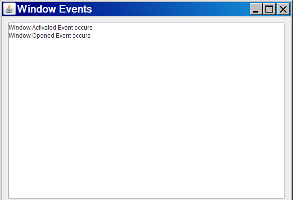
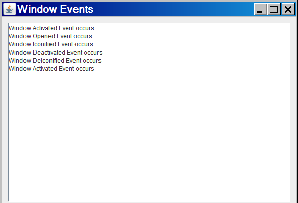
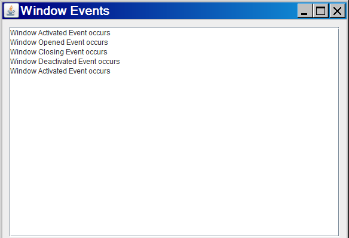
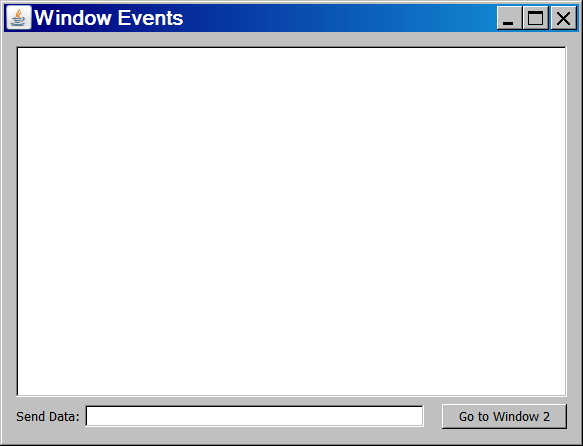
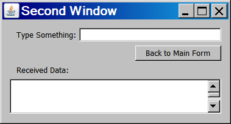
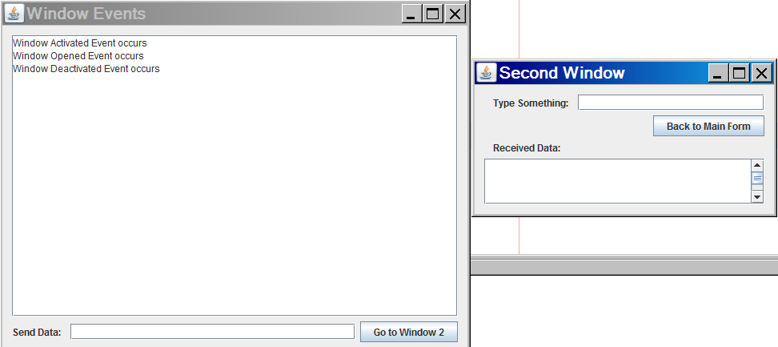

At this point you've learned about ActionListener and ActionEvents, and also about handling mouse events and keyboard events. You might have also explored other kinds of events. Window events work similarly to other events you've been working with. With window events, you can write code to execute when a window loads, before it closes, when it maximizes or minimizes, or even when the user switches between your window and another window.
Window listeners are used for a variety of reasons. For example, if you want to perform an action before the user closes the application, such as saving data to a file. You can also use a window listener to pass data back and forth from one window to another. In a more complex application, you can use window listeners to terminate certain processes while a window is minimized, and then restart those processes when the window becomes maximized, which can result in huge resource savings.
There are three classes that can be used to listen for window events:
At first it might seem that WindowListener and WindowStateListener are the same thing; why would you use one over the other?
In addition to the listener classes, there is the WindowEvent class. Window listener methods include a WindowEvent parameter that contains information about the window event that occured:
The state returned by getNewState() and getOldState() can be detected using the java.awt.Frame class constants:
Since JFrame is a child of java.awt.Frame, you can access these constants using the JFrame class as the qualifier. E.g:
if (event.getNewState() == JFrame.ICONIFIED) {
// code that suspends a thread of execution
} else if (event.getNewState() == JFrame.NORMAL) {
// code that continues executed the suspended thread
} ...
To see how window events work, create a GUI program with a text area component. We will write the code that allows us to see how the different window events work:
public void windowClosing(WindowEvent event) {
txtDisplay.append("Window Closing Event occurs\n");
}
public void windowClosed(WindowEvent event) {
txtDisplay.append("Window Closed Event occurs\n");
}
public void windowOpened(WindowEvent event) {
txtDisplay.append("Window Opened Event occurs\n");
}
public void windowActivated(WindowEvent event) {
txtDisplay.append("Window Activated Event occurs\n");
}
public void windowDeactivated(WindowEvent event) {
txtDisplay.append("Window Deactivated Event occurs\n");
}
public void windowIconified(WindowEvent event) {
txtDisplay.append("Window Iconified Event occurs\n");
}
public void windowDeiconified(WindowEvent event) {
txtDisplay.append("Window Deiconified Event occurs\n");
}
Notice what appears in your text area when your program starts:

We can see from reading the text area's contents that the windowActivated() event is triggered before the windowOpening() event. Keep this in mind when you want to write code for these two events; code in your windowActivated() event will occur before your windowOpening() event code.
Now try minimizing your window and then restoring it again. See what appears in the text area when you restore the window back to its normal state:

Notice that when the window is minimized, the windowIconified() event occurs, and then the windowDeactivated() event occurs. This should make sense, since the window obviously is no longer the active window when it's minimized.
Similarly, you'll see that when the window is restored, the windowDeiconified() event occurs, followed by the windowActivated() method. Once the window is restored to its normal state, it then becomes the active window.
You can see after doing this test that multiple events can occur when you perform an action with a window. Keep this in mind when you code multiple events - some of these events execute in sequence with each other.
We've had an opportunity to test the windowOpening(), windowIconified(), windowDeiconified(), windowActivated(), and windowDeactivated() events. Now let's try to test the windowClosing() and windowClosed() events.
What happens when you press the close (X) button on the JFrame component? Your program terminates and you have no chance to see the output in the text area!
Recall that the windowClosing() event occurs when a request is made to close the window; this method doesn't actually close the window. Normally the windowClosing() event would be a good place to put code that confirms exit with the user, such as:
int ok = JOptionPane.showConfirmDialog(null,
"Are you sure you wish to exit?", "Exit Program",
JOptionPane.YES_NO_OPTION, JOptionPane.QUESTION_MESSAGE);
if (ok == JOptionPane.YES_OPTION)
System.exit(0);
As we know, if the user clicks YES in the dialog, the program will exit. Otherwise, nothing will happen. However, if you add this code to your windowClosing() event right now, you'll find that the program exits even if you click NO!
This is actually because the JFrame's setDefaultCloseOperation() is already set to EXIT_ON_CLOSE by default. So when you click the close button, the program exits. Using EXIT_ON_CLOSE is the equivalent of using System.exit(0), so the program terminates and the frame is unloaded from memory.
To fix the problem, we should ensure that the program does nothing when the user clicks the close button. We'll write the code to exit ourselves in the windowClosing() event.
Go to your form's design screen and make sure your form is selected. Find the defaultCloseOperation property and set it to "DO_NOTHING".
Now run the program again and click the close button. You'll see that "Window Closing Event occurs" is appended to the text area each time you press the X button. Of course, our program won't exit now, but that's ok. We want the program only to exit when the user says it's ok :)
Since you can't close the application right now, just click the small red button on the left side of your output window (this is the window below your editor window). If you don't see your output window, press Ctrl-4 and it should appear.
It is preferred that when the X is clicked in our application, the user is asked if they would like to exit, and if they say yes, we exit the program using System.exit(0). You've written this code many times, so go ahead and add it to your windowClosing() event, after the println() statement. Then test your program by clicking the close button, then click "No" when asked if you want to quit. See what comes up in the text area:

See how, when the confirm dialog appears, the windowClosing() event occurs, followed by the windowDeactivated() event (because the dialog becomes the active window, which deactivates your application's window). Notice also that when you click "No" in the dialog, the dialog disappears, putting the focus back on your application window, which causes the windowDeactivate() method to occur.
You can now exit your program although you'll be unable to see the results of the windowClosed() event, since it occurs after the window is closed. A bit of a conundrum, isn't it? ;)
Most of your programs will include multiple windows. You might click on a button or menu item of a main window to open a second window. The main window is usually referred to as the parent window and the second window, which is spawned by the first window, is referred to as the child window.
The easiest way to have a parent window spawn a child window is to simply instantiate and make visible the second window from the first one. For example, imagine you have a WindowOne class that includes a JButton object called cmdWin2. WindowOne is your parent window. You then have a second class called WindowTwo that is your child window. Clicking the cmdWin2 button on the WindowOne form will cause WindowTwo to appear. You might code similar to:
public class WindowOne extends JFrame implements ActionListener {
// ... code that configures and sets up your JFrame and its components
public void actionPerformed(ActionEvent event) {
if (event.getSource() == cmdWin2) {
WindowTwo win2 = new WindowTwo();
// any code you might want to add to set up
// the second window; this could also go in the
// WindowTwo constructor.
win2.setVisible(true);
} else if ..........
// whatever other code you have for event handler
}
// other code for this class
}
Let's try an example using multiple windows. Add a label/text field pair to your main GUI, and a command button. Later we'll use the text box to pass data to a second (child) form. The command button will be used to open the second form, which we'll create in a moment.
In the image below, my text field is called txtDataSent and my button is called cmdWindow2.

Once you've updated your main application, add a second JFrame to your project and set it up like the image shown below. This will be the child form that will be shown when the user clicks the button on the parent form.

This window should have:
Additionally, we'll be writing window and action event handlers for the child form, so write the necessary code to implement both interfaces, register the necessary components, and add the event handler methods.
To start with, let's have the parent form show the second form when the user clicks cmdWindow2:
public void actionPerformed(ActionEvent event) {
if (event.getSource() == cmdWindow2) {
Window2 w2 = new Window2();
w2.setVisible(true);
}
}
Now run your main application and click the button. You'll see that the windowDeactivated() event occurs as the second window appears.

Notice also that you can click back and forth between the windows and see the main frame's activate and deactivate events occuring.
Now, once we have the child form open, we might wish to close it. What happens if you click the close button on the second form? The program terminates!
We discussed this earlier - the default of the defaultCloseOperation property is EXIT_ON_CLOSE, which is the equivalent of invoking the System.exit(0) method. This causes the entire program to terminate, when instead we want to go back to the main form without ending the whole application.
So we know the solution to this already - change the defaultCloseOperation property on the second form. Recall from the beginning of the course that there are four possible values for this property:
Note that when a frame is disposed, your program will stay running as long as there is another window in memory (even if that window is invisible, oops!). Once the last window is memory is disposed, the program will terminate.
So which value should be use for the second form? We can choose HIDE, to make the form invisible, but still in memory, or we can use DISPOSE to unload the form from memory completely. If you know you'll be flipping back to the second form often, you'll prefer HIDE since you won't have to reload the form every single time. You should then update your event handler in the main form so that you're not instantiating a new version of the form if it already exists. We'll see how we can do this later.
A better idea, for this example (may not be a better idea for other programs, it depends on what you're trying to do) is to take the second form completely out of memory, since we're just going to instantiate a new one next time we click the Window2 button.
Go to your second form's properties and change the defaultCloseOperation property to DISPOSE for now. We will change this later.
Now try your program - you can bring up the second form, and then close it by clicking its close (X) button.
What happens if you click the button on the main form again, while the second form is still open? If you try this, you'll see that another instance of the child form is created. In fact, you can do this as many times as your computer allows, although each new instance of the child form is taking up quite a bit of memory. You might notice your computer slows down if you click the button too many times. When you're done, be sure to close all the child forms and exit the program so you can release the resources used by all the JFrame objects.
In most programs, you'll want to ensure that only one instance of the child form is allowed to be instantiated, especially if your parent and child forms are passing data back and forth to each other (which we'll learn to do later).
One very easy way to handle this problem is to make the parent form invisible when the user clicks the button to show the 2nd form. Of course, this means you'll have to do likewise in the 2nd form when you want to go back: make the child form invisible and show the main form. You can try this now: Add the code to your cmdWindow2 button's event handler on the main form to show the child form and hide the main form:
Window2 w2 = new Window2(); w2.setVisible(true); this.setVisible(false);
In your second form, make sure the defaultCloseOperation is set to DO_NOTHING. When the user clicks the "Back to Main Form" button or the close button, we want to show the parent form and hide the main form. The first will be done in the back button's action event handler, the second in the windowClosing() event of the form. Therefore, it makes sense to write a single method and then call it from both places.
However, how do we access the parent form from inside the child form? An easy way is to pass a reference of the parent form into the child form when we instantiate it. We can store this reference in a private data member of the child form so that we can access it from inside our method, or anywhere else in the child form's code.
Make sure your cmdWindow2 event handler is making the main form invisible after the second form is made visible (you did this earlier).
So now, your cmdWindow2 event handler should have the following code:
if (event.getSource() == cmdWindow2) {
Window2 w2 = new Window2(this);
w2.setVisible(true);
this.setVisible(false);
}
When the user is on the second form and clicks the "Back to Main Form" button, we want the child form to disappear and unload from memory, and the main form to appear again. In order to allow access to the main window from the child window, we must give the child form a reference to the parent. We can do this by creating a private data member to hold the reference to the parent.
In your child form, create a private data member for your main form. In my application, the main form class is called WindowEventsExample:
private WindowEventsExample parent;
Now, when the child form is instantiated, we need to pass the parent window's reference to the child. We can do this via an extra constructor method that we add to the child:
public Window2(WindowEventsExample w) {
parent = w;
}
Here, we've created a second constructor that accepts a WindowEventsExample object (remember to put the name of your own main class here, if yours is different). Then, we assign that parameter value to the parent data member. Now, our child form can access the parent form using the parent data member!
However, the child's default constructor contains the call to the initComponents() method, so we have to make sure that executes. An easy way to do this is to call the default constructor from the single-param constructor using this():
public Window2(WindowEventsExample w) {
this();
parent = w;
}
Now we can tell the parent form to re-appear in our Window2.cmdBack button.
The code we put into the cmdBack button will show the main form and then dispose of the second form. We need to dispose of the second form rather than just hide it because our main form's Window2 button is creating a new instance of the second form each time it's clicked. If we don't dispose of the second form when we're done with it, many copies could exist in memory and slow down our application.
This exact same code will go into the windowClosing() event also, since we want the same thing to occur when the user clicks the second window's close (X) button. Therefore, let's make a method to do the job and then call it from both event handlers:
private void goBackToMain() {
parent.setVisible(true);
this.dispose();
}
public void windowClosing(WindowEvent event) {
goBackToMain();
}
public void actionPerformed(ActionEvent event) {
if (event.getSource() == cmdBack) {
goBackToMain();
}
}
Give it a try. You'll see that the parent form disappears and the second form appears when the Window2 button is clicked; when the Back to Main Form button is clicked on the child form, it disappears and the main form reappears.
There are different ways to pass data back and forth between two windows. The techniques we see here aren't necessarily the only ones, and even though your sample application will use multiple techniques, it's not required that you always use all of these in one application. Use whatever works for you, for your application.
First, let's try passing data into the second window. This is easy! You already did this when you passed a reference of the main window into the secondary window. We can pass data in the same way. For example, if the user types some text in the "Send Data: " text field on the main form, we can make it appear in the "Received Data:" text area on the secondary form by passing it into one of the constructors. Remember that you need a matching constructor in your second window's class! I'm going to create a third constructor, in case I don't want to always pass a string value along with the parent window reference:
// Main Window class:
if (event.getSource() == cmdWindow2) {
Window2 w2;
if (txtDataSent.getText().trim().equals("")) {
w2 = new Window2(this);
} else {
w2 = new Window2(this, txtDataSent.getText());
}
w2.setVisible(true);
this.setVisible(false);
// Window2 class:
public Window2(WindowEventsExample w, String recdData) {
this(w);
txtData.setText(recdData);
}
An alternative method allows a little more flexibility. You can store the data in a data member inside Window2. This way, the data is available anywhere inside the Window2 class. This is my preferred way of passing data into a secondary form:
// Window2 class:
private String receivedData = "";
// .....
public Window2(WindowEventsExample w, String recdData) {
this(w);
receivedData = recdData;
}
Note that you might prefer using a mutator method to set the received data, in case you're worried that bad data could be passed into the form.
Now, what if we wanted to pass data back from the child form to the parent form? This is also relatively easy, but you need to add some things.
First, you need some way of being able to publicly access the data from your secondary form. I like to use a private data member with a public accessor method. For example, if I were passing back a login name, I would have a private instance variable loginName and then create a getLoginName() method that would allow me to retrieve the value of that data member outside of the Window2 class. This is important because we'll need to access the data from the parent window.
So first, let's create a private data member for the data that Window2 is passing back, and create an accessor for it.
// in Window2 Class:
private String userInput = "";
// .......
public String getUserInput() {
return userInput;
}
Now we need to make sure that the user input is set properly when the user goes back to the main window. Recall that in a previous exercise we wrote the goBackToMain() method which is called from the Back button's action performed, and from the windowClosing() events. This method should update the instance variable with the user's input, if valid
Furthermore, we need to comment out or delete the displose() statement in this method. Later, we're going to be accessing the child form's data from the parent, and we won't be able to do that if the child form has been disposed of.
private void goBackToMain() {
parent.setVisible(true);
// comment out this next line:
//this.dispose();
if (!txtInput.getText().trim().equals("")) {
// add any other data validation you need here
userInput = txtInput.getText().trim();
}
}
Next, we need to be able to retrieve that data value in our parent form. To do this, the parent needs a way to access the child form, so we could, for example, say something like:
String getData = childForm.getUserInput();
We did this in the child form earlier when we needed access to the parent form - we created a private data member in the child form with a reference to the main window, so we could access the parent form where we needed inside the secondary form. We can also do this inside the main window with the child form:
// Main Window class: private Window2 child = null;
Next, we need to alter our code for the Window2 button: When the button is clicked we want to store the instance of the child form into the child data member:
if (event.getSource() == cmdWindow2) {
if (txtDataSent.getText().trim().equals("")) {
child = new Window2(this);
} else {
child = new Window2(this, txtDataSent.getText());
}
child.setVisible(true);
this.setVisible(false);
} // ....
Here, we store the new window into the child variable before we show it and hide the main form.
Next, when the user returns to the main form, we want to grab the data from the child form and use it. One place where we can get the child form's data when we return to our main window is in the windowActivated() method: this method executes when the form returns as the active window.
Since the windowActivated() event could occur at any time, not just when viewing the second form, we should make sure we only refer to the child form if it's already in existence. If the child form doesn't exist, then the activate event probably occurred when the user flipped to another application and back, or viewed a pop-up dialog box. If we try to access the child form's input data when the child form hasn't been instantiated yet, the program could crash:
public void windowActivated(WindowEvent event) {
txtDisplay.append("Window Activated Event occurs\n");
// just in case, make sure there's a child form
if (child != null) {
if (!child.getUserInput().trim().equals("")) {
txtDisplay.append(" USER INPUT: " + child.getUserInput() + "\n");
}
child.dispose();
child = null;
}
}
Notice the last two statemenents inside the if-block:
child.dispose();
child = null;
After we are finished with the child form, we need to ensure
that it is disposed of. Remember that we might want to view this
form again later, so be sure that you dispose of the form when
you're done. Also, we set the child data member to null, to
ensure there are also no longer any references to the child form
in memory (otherwise, its resources won't be released from
memory).
That's it!! Using those examples, you can easily pass valid data back and forth between two or more forms. You can even use the same techniques to pass objects, or even an entire array of data or an array list of objects.